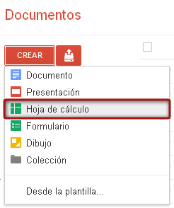

Para empezar a trabajar con una hoja de cálculo podremos hacerlo creando una nueva hoja desde la pantalla general. Para ello, pincharemos en CREAR, Hoja de Cálculo. También podremos subir una hoja que ya tengamos creada.
1. Si ya tenemos creada la hoja de cálculo y queremos añadir hojas podremos hacerlo desde la parte inferior, pinchando en el botón más.
2. Si pinchamos en la flecha de la hoja podremos suprimir, duplicar, copiar, cambiar el nombre, proteger la hoja u ocultarla.
